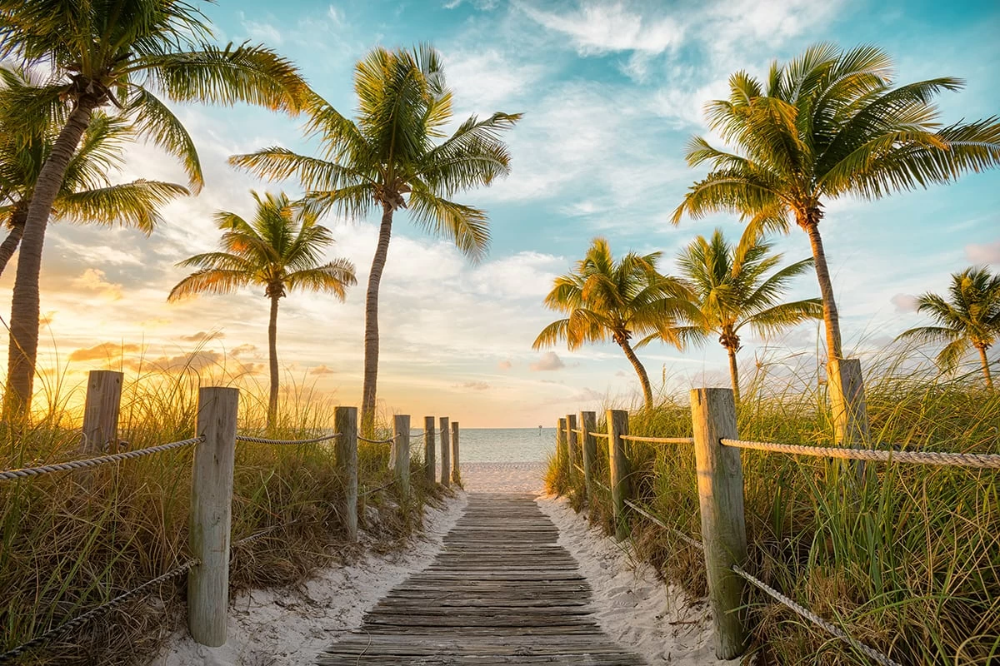

Welcome to the best site to find top travel spots in 2023 for fun with the family or without!
Wheather your traveling with a loved one, your parents, your children, or even just by yourself we have the best destinations for you to get out and enjoy the beaches of the world
located in the deep south of Florida, 90 miles north of Cuba, Key West has nothing but fun for the group. There's no better island to enjoy your family vacation... it's just far enough but still in the U.S.

enjoy the clear blue waters!

See America'sSouthern Most Point!

visit the beautiful towns!
If you're looking for a taste of Hawaii's beautiful beaches without the crowds on Oahu, go to Maui. The island boasts impressive beaches both big and small, adult and family friendly, as well as the black sand shores at Wai'anapanapa State Park

Enjoy the island views!

See so many sea turtles!

stay in amazing hotels with great views!
With countless beaches to choose from on 700 islands, it's easy for you to find your perfect spot in the Bahamas. From massive resorts like Atlantis, Paradise Island to privately owned islands, the variety of beaches here are endless. If you're looking for underwater caves, diving excursions and a stretch of sand featured in the "Pirates of the Caribbean" films, look no further than Gold Rock Beach in Lucayan National Park on Grand Bahama Island

Relax over the clear blue waters!

Swim with turtles!

Relax beach and pool side!
Boasting 333 islands, resplendent resorts, sparkling waters and endless stretches of pristine sand, Fiji is the perfect spot for paradise-seeking beachgoers. Travelers who want to snorkel while on vacation should set their sights on Taveuni's diverse coral reefs. Meanwhile, those pining for the tropical beaches featured in the movie "Cast Away" and multiple seasons of the TV show "Survivor" can catch a ferry from Port Denarau and head directly to one of the 20 islands that make up the Mamanuca Islands.

Stay in these amazing bungalows!

explore the jungles!

enjoy the nights too!
This French Polynesian island is small but mighty. Measuring only 6 miles long and less than 3 miles wide, Bora Bora is packed with stunning beaches, green jungles and ritzy resorts featuring overwater bungalows. Matira Beach is ideal for sunbathing and strolling along sandy shores, while the beach at the Four Seasons Resort Bora Bora is where you should head for Mount Otemanu views and calm water. Snorkeling and shark-feeding excursions are also available if you enjoy adventurous pursuits.

go kayaking!

Tan in the sun!

relax all day long!